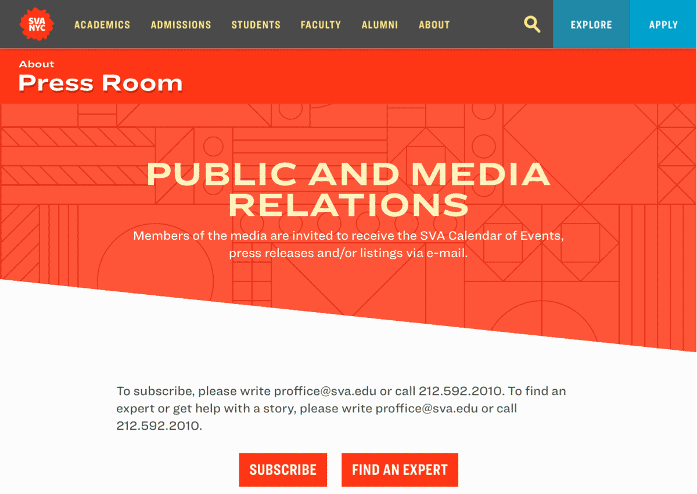
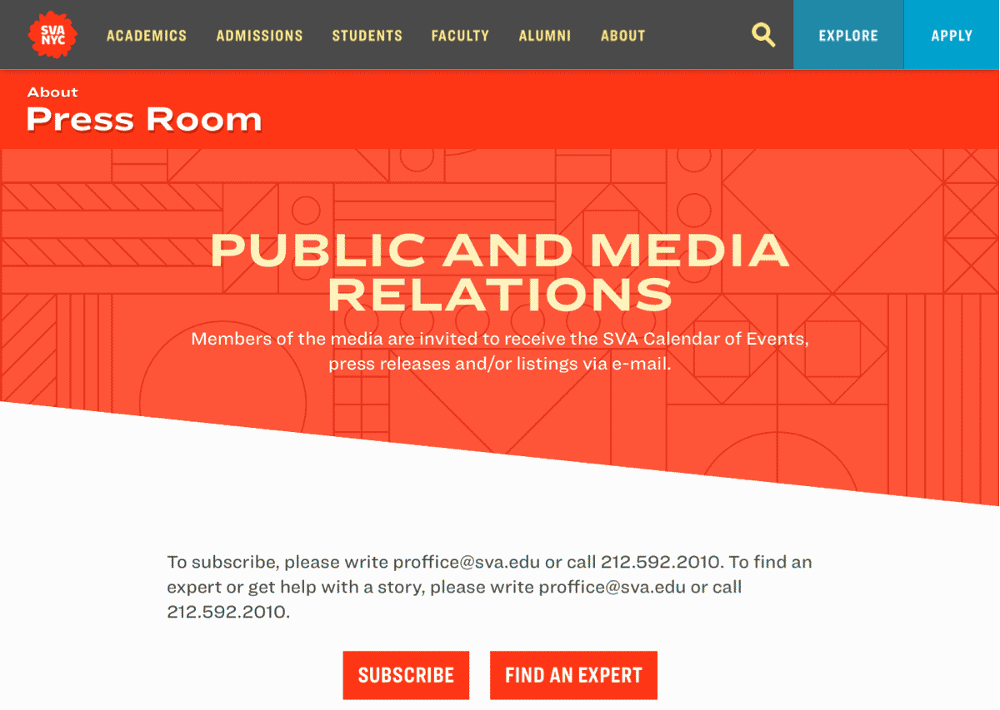
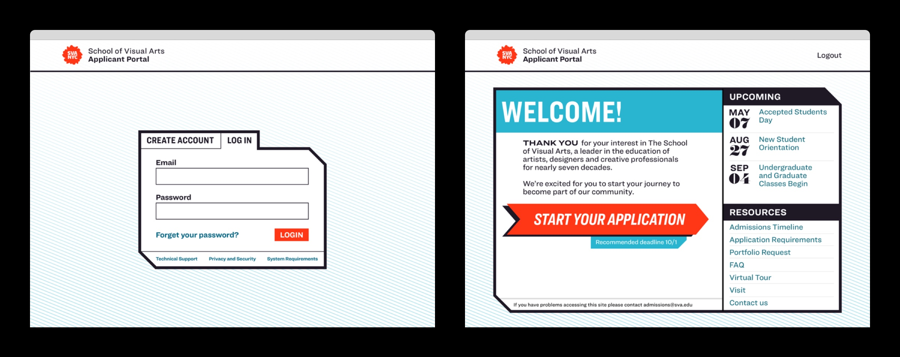
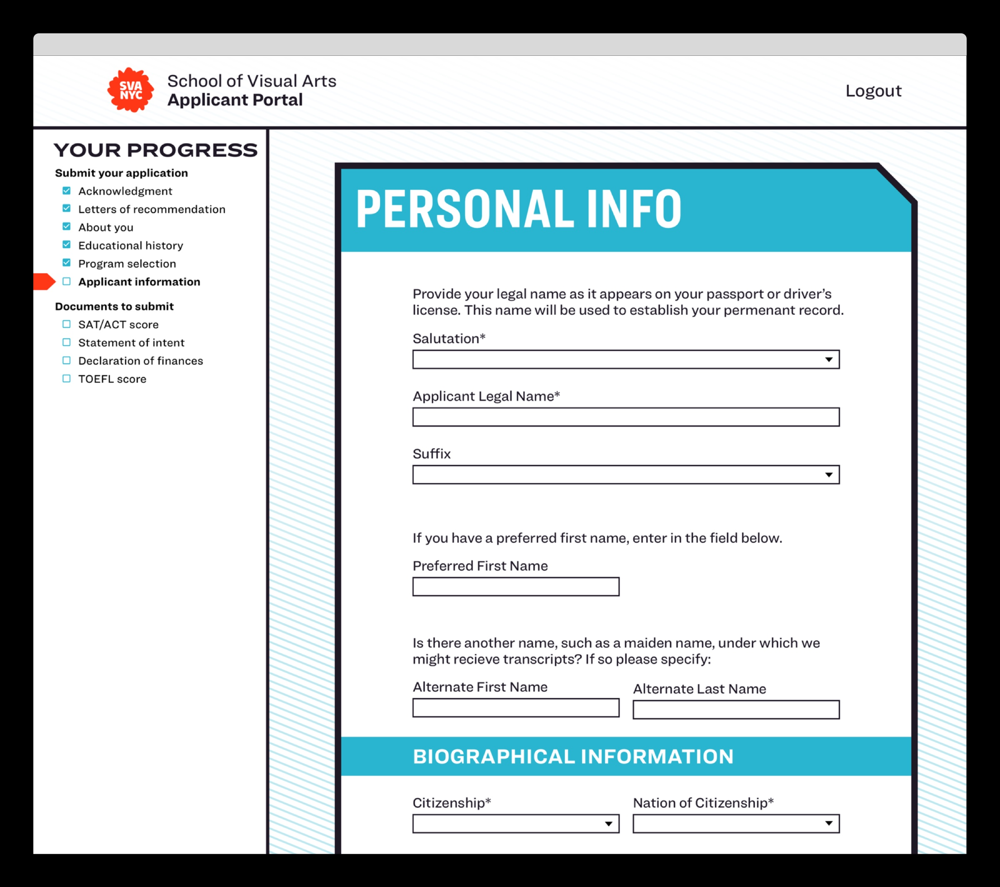
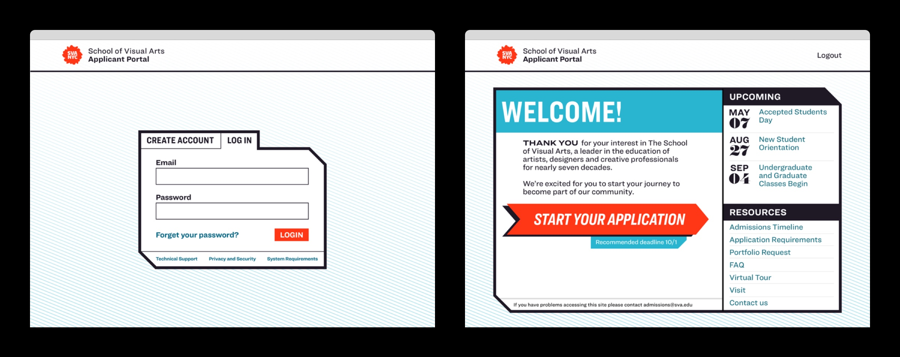
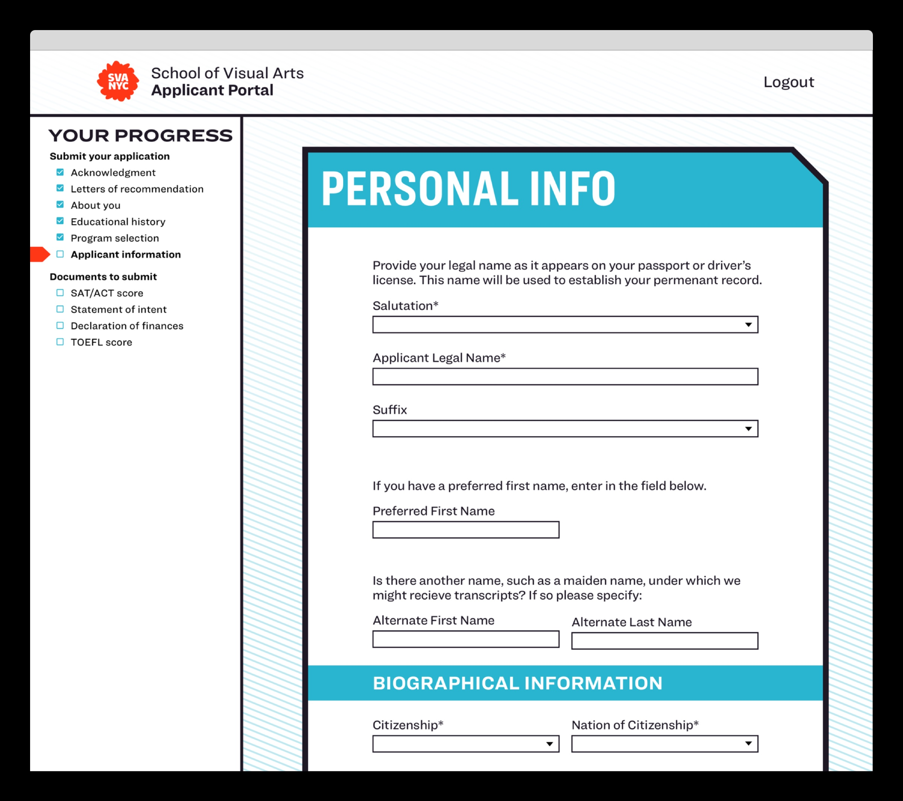
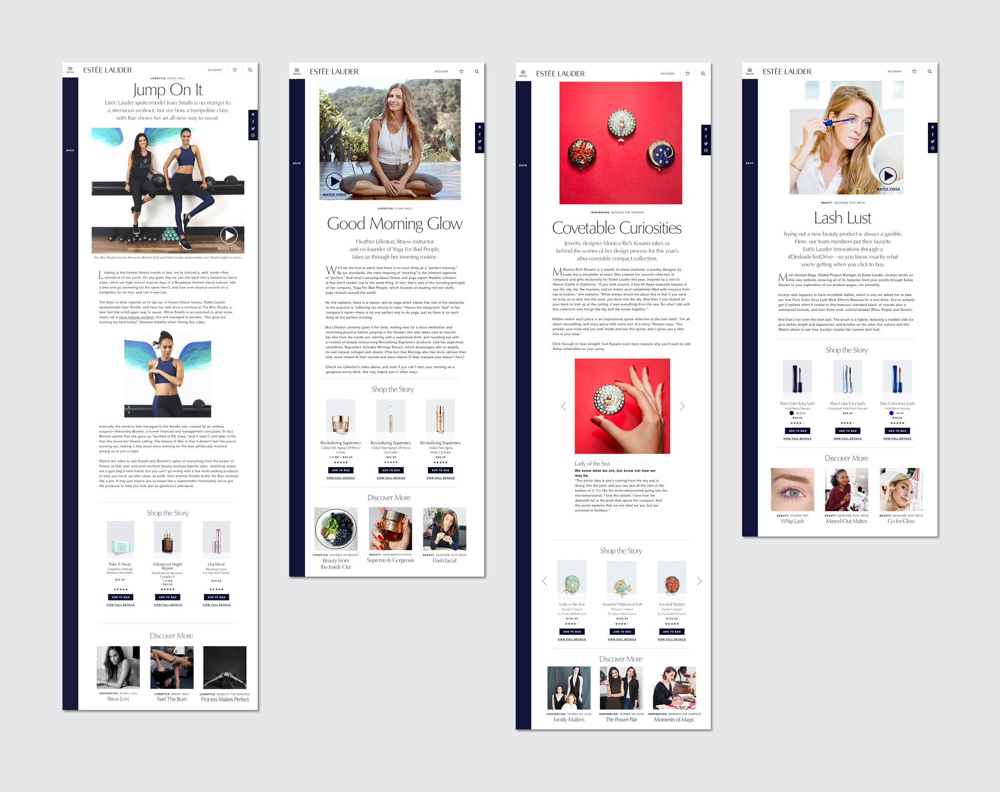

SVA.edu 4.0 is a website redesign for the School of Visual Arts, an art and design college in New York City. The project included a full frontend redesign, completely custom-built CMS, a new application portal, and a lot of QA testing. Collaborators on the project include Gail Anderson, Eric Corriel, Brian Smith, Declan Van Welie, Ryan Durinick, Sam Potts, and Stephanie Gaito.
 



 





Estée Lauder 2017 was a freelance contract Josh took on after graduating. While there he designed ad banners, email newsletters, and web articles. Which were then used by the company as templates for future banners, newsletters, and articles.


The Other 99 is the product of a 99 days of design challenge. Every day Josh designed a room and its blueprint, each one dedicated to a single activity, pop culture reference, joke, or occasionally all three. View Site